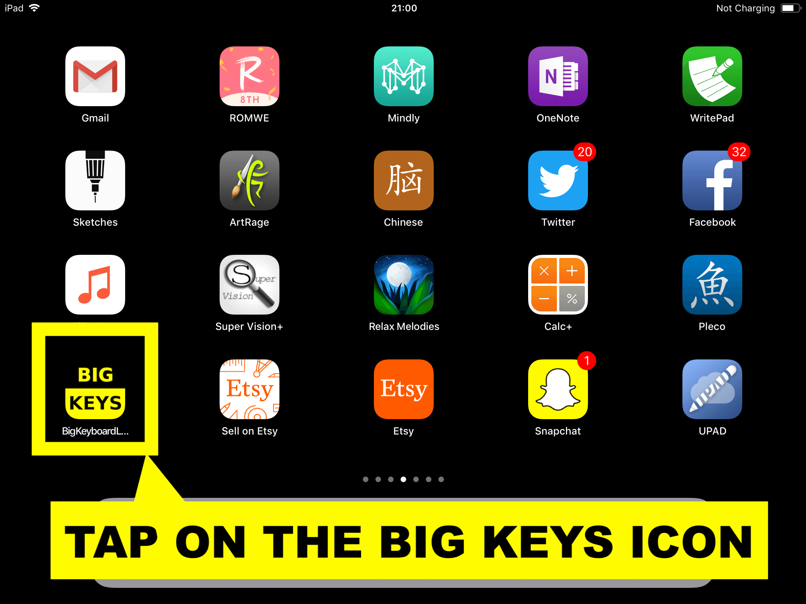
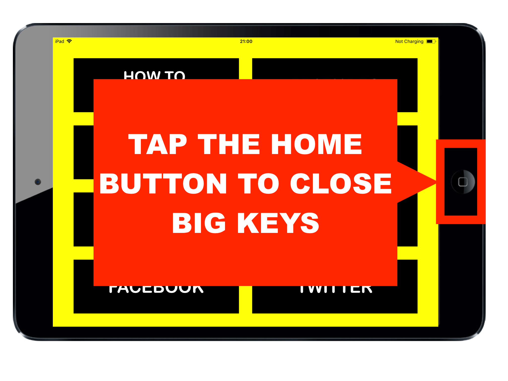
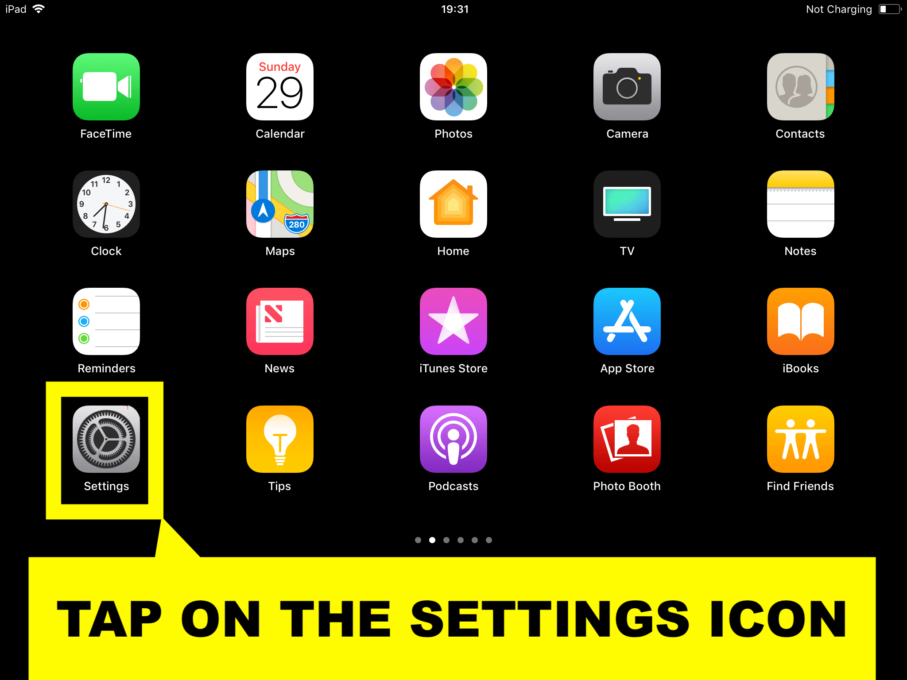
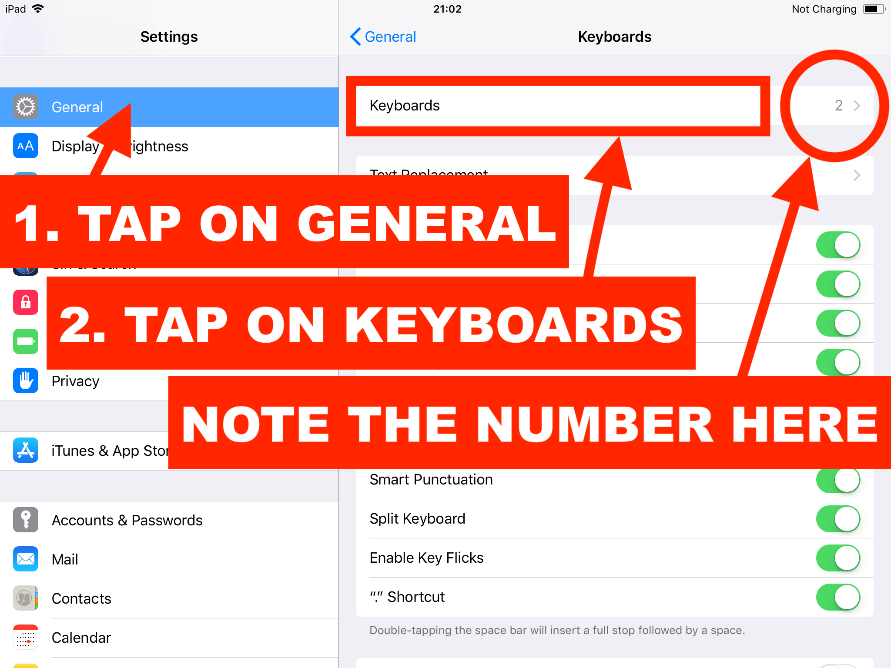
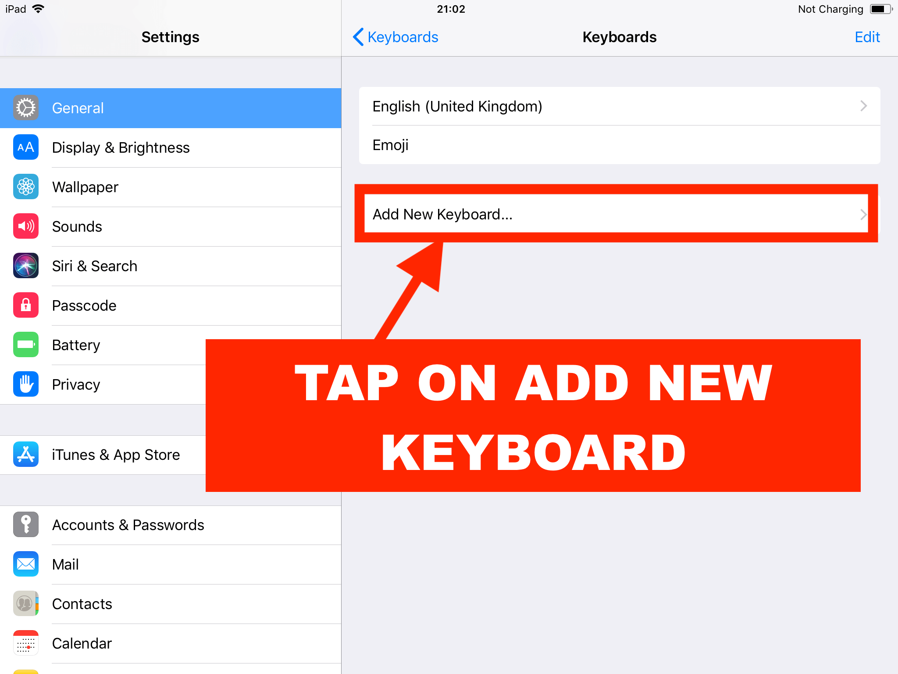
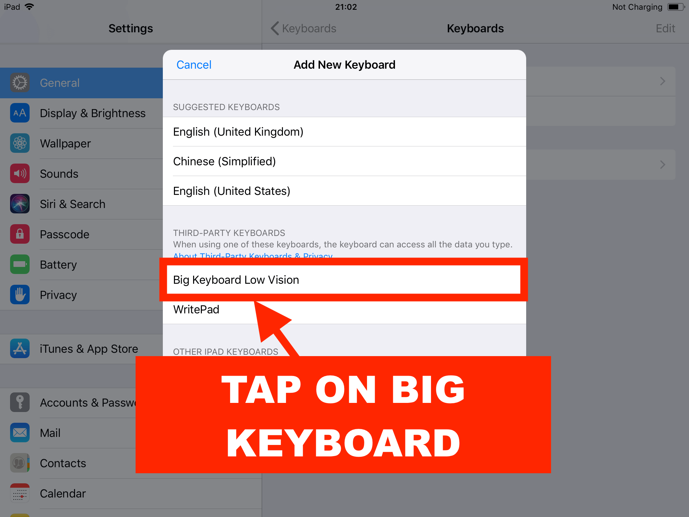
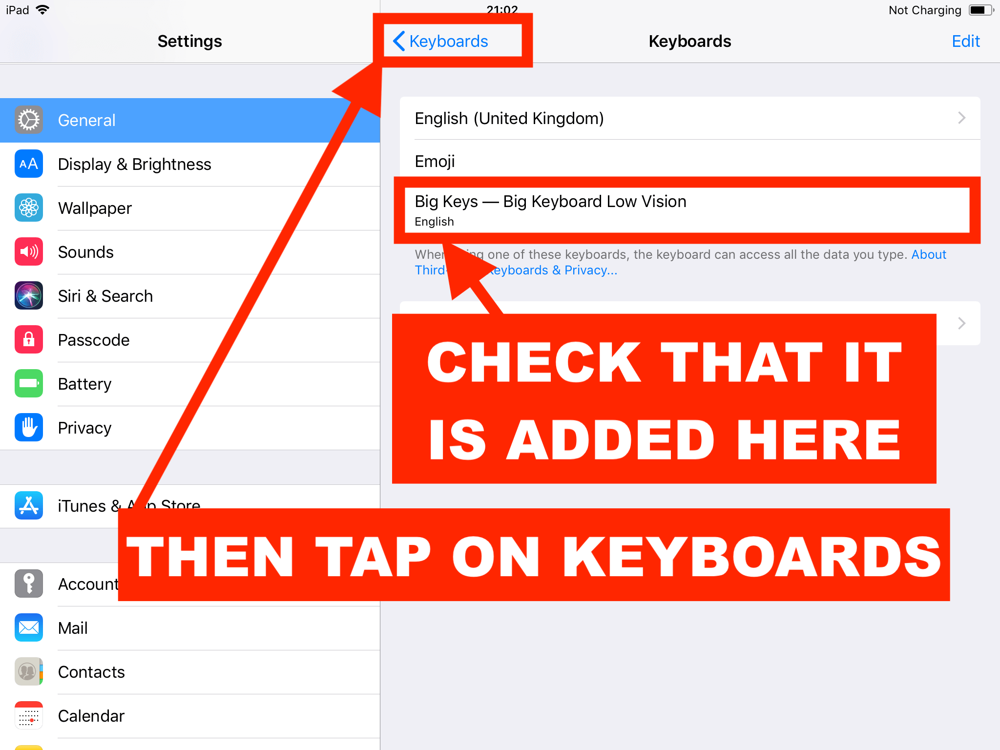
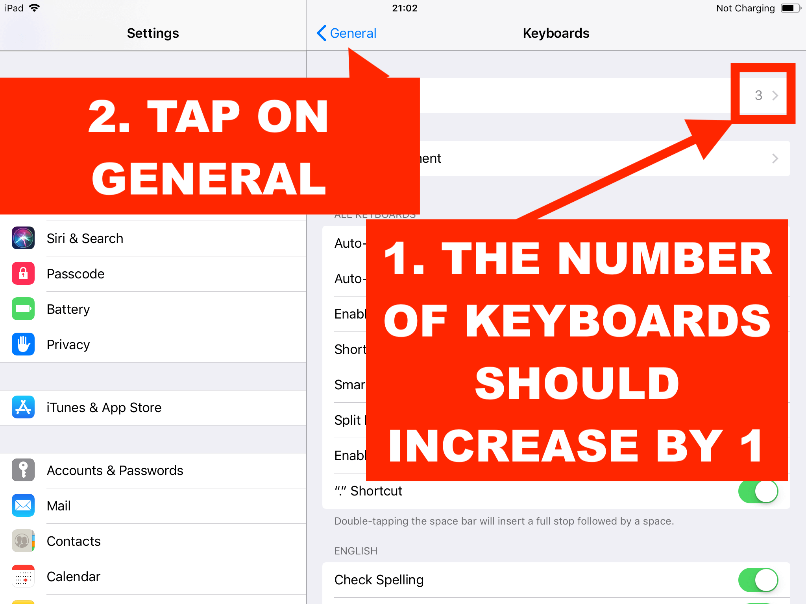
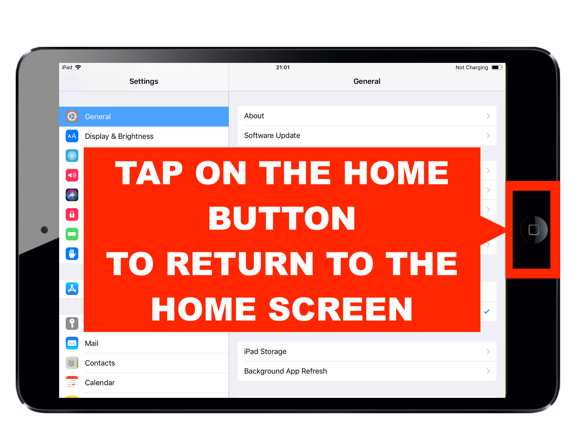

Step-by-Step Installation Instructions
Step 1: Tap on the Big Keys Icon

Step 2: Tap the Home Button to Close Big Keys

Step 3: Tap on the Settings Icon

Step 4: Navigate to 'General' & Note Installed Keyboards

Step 5: Tap on 'Add New Keyboard'

Step 6: Select Big Keys

Step 7: Confirm Installation

Step 8: Verify Keyboard Count

Step 9: Return to the Home Screen

Don't forget to switch to Big Keys before using it!
Learn to switch keyboards here.